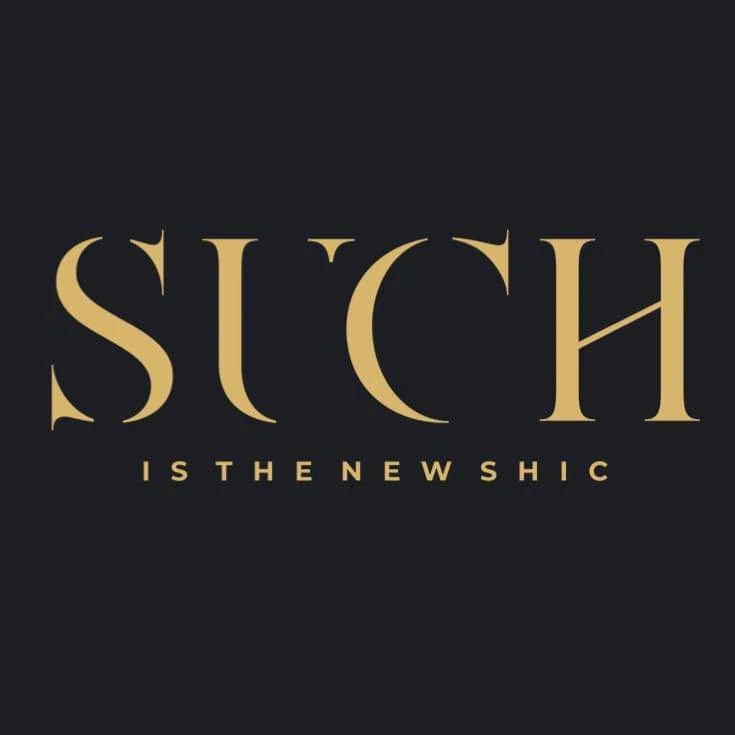

{{Coafor · unghii · sprâncene · Valea Lupului|Hair · nails · brows · Valea Lupului|Cabelo · unhas · sobrancelhas · Valea Lupului}}
Such Salon.
is the new shic
{{Coafor, manichiură, pedichiură și pensat, într-o casă de pe Fundacul Barbu Lăutaru. Pieptănăm, aranjăm, îngrijim; tu alegi doar ora.|Hair, manicure, pedicure and brows, in a house on Fundacul Barbu Lăutaru. We comb, shape and care; you just pick the time.|Cabelo, manicure, pedicure e sobrancelhas, numa casa no Fundacul Barbu Lăutaru. Penteamos, arranjamos, cuidamos; só escolhe a hora.}}
{{Trage pieptenele peste nume.|Drag the comb across the name.|Arraste o pente sobre o nome.}}

{{26 de recenzii pe Google, 25 dintre ele de cinci stele.|26 reviews on Google, 25 of them five stars.|26 avaliações no Google, 25 delas de cinco estrelas.}}
{{Servicii|Services|Serviços}}
{{Din cap până-n picioare.|From head to toe.|Da cabeça aos pés.}}
{{Ce fac aici clientele, după cum spun chiar ele în recenzii.|What clients come here for, in their own reviews.|O que as clientes vêm cá fazer, segundo as próprias avaliações.}}
{{Coafor|Hair|Cabeleireiro}}
{{Tuns, coafat, aranjat. Spui ce ai în minte la programare.|Cuts, styling, finishing. Tell us what you have in mind when you book.|Corte, penteado, arranjo. Diga o que tem em mente ao marcar.}}
{{Alege|Choose|Escolher}} →{{Manichiură|Manicure|Manicure}}
{{Lucru atent, fără grabă, cu grijă pentru unghiile tale.|Careful work, unhurried, with real care for your nails.|Trabalho cuidadoso, sem pressa, com atenção às suas unhas.}}{{cu Lavinia, din recenzii|with Lavinia, per reviews|com a Lavinia, segundo as avaliações}}
{{Alege|Choose|Escolher}} →{{Pedichiură|Pedicure|Pedicure}}
{{O ședință în care chiar te relaxezi.|A session where you actually get to relax.|Uma sessão em que relaxa mesmo.}}{{cu Lavinia, din recenzii|with Lavinia, per reviews|com a Lavinia, segundo as avaliações}}
{{Alege|Choose|Escolher}} →{{Pensat|Brows|Sobrancelhas}}
{{Sprâncenele cum le vrei tu: te întreabă înainte ce preferi.|Brows the way you want them: you’re asked what you prefer first.|Sobrancelhas como as quer: perguntam-lhe antes o que prefere.}}{{cu Anca, din recenzii|with Anca, per reviews|com a Anca, segundo as avaliações}}
{{Alege|Choose|Escolher}} →
{{prețuri, durată și lista completă: de confirmat|prices, duration and full list: to be confirmed|preços, duração e lista completa: a confirmar}}
{{Programare|Booking|Marcação}}
{{Alegi, trimiți, vii.|Choose, send, come in.|Escolhe, envia, vem.}}
{{Cererea pleacă scrisă, cu serviciul, ziua și ora. Ca să fie sigur, sună și tu după ce o trimiți: un telefon scurt confirmă totul pe loc.|Your request goes out in writing, with service, day and time. To be sure, give a quick call after sending: a short call confirms it on the spot.|O pedido segue por escrito, com serviço, dia e hora. Para ter a certeza, ligue depois de enviar: uma chamada curta confirma tudo na hora.}}
{{Cel mai rapid răspuns îl ai la telefon:|The fastest answer is by phone:|A resposta mais rápida é por telefone:}}
0757 402 693{{program: de confirmat|opening hours: to be confirmed|horário: a confirmar}}
{{Recenzii Google|Google reviews|Avaliações Google}}
4,8
{{Ce spun clientele.|What clients say.|O que dizem as clientes.}}
{{Lavinia e atentă la fiecare detaliu și lucrează cu multă grijă: la manichiură și pedichiură m-am simțit răsfățată de la început până la sfârșit.|Lavinia pays attention to every detail and works with real care: at my manicure and pedicure I felt pampered from start to finish.|A Lavinia está atenta a cada pormenor e trabalha com muito cuidado: na manicure e pedicure senti-me mimada do início ao fim.}}
{{La pensat cu Anca, sprâncenele au ieșit exact cum le voiam. Te întreabă ce preferi și lucrează meticulos și delicat.|Brows with Anca came out exactly as I wanted. She asks what you prefer and works meticulously and gently.|As sobrancelhas com a Anca ficaram exatamente como queria. Pergunta o que prefere e trabalha com minúcia e delicadeza.}}
{{Toate cele 26 de recenzii sunt pe Google Maps.|All 26 reviews are on Google Maps.|As 26 avaliações estão no Google Maps.}} {{Citește-le|Read them|Ler}} →
{{Contact|Contact|Contactos}}
{{Casa de pe Barbu Lăutaru.|The house on Barbu Lăutaru.|A casa da Barbu Lăutaru.}}
- Fundac Barbu Lăutaru707410 Valea Lupului, Iași
Plus Code: 5GHG+X9 · {{lângă Strada Zării|near Strada Zării|perto da Strada Zării}} - 0757 402 693{{Sună pentru programare sau trimite cererea de mai sus.|Call to book or send the request above.|Ligue para marcar ou envie o pedido acima.}}
- {{Program|Opening hours|Horário}}{{de confirmat|to be confirmed|a confirmar}}
- Facebook · Such Salon{{Noutăți și lucrări.|News and work.|Novidades e trabalhos.}}